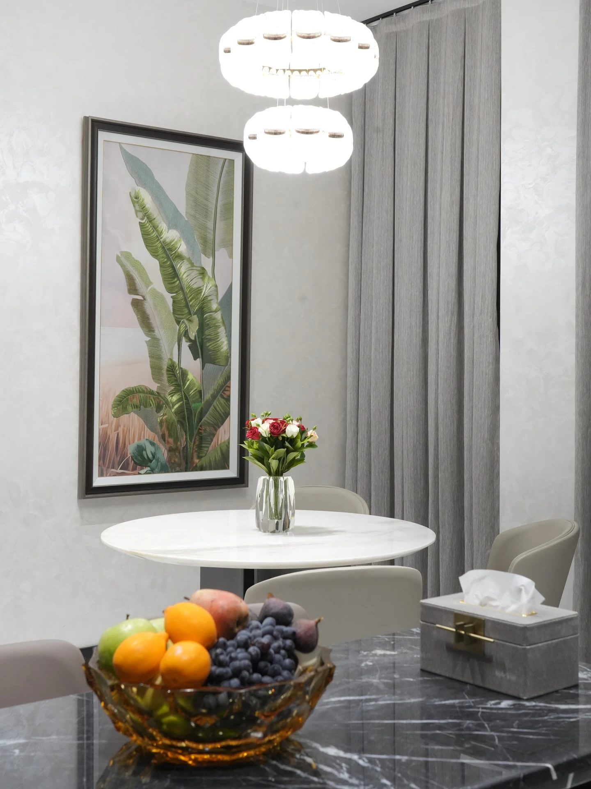
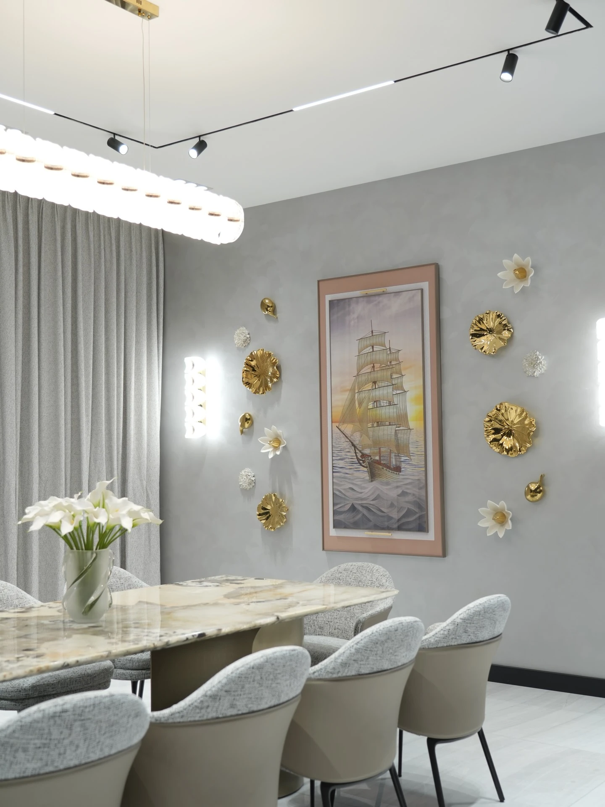
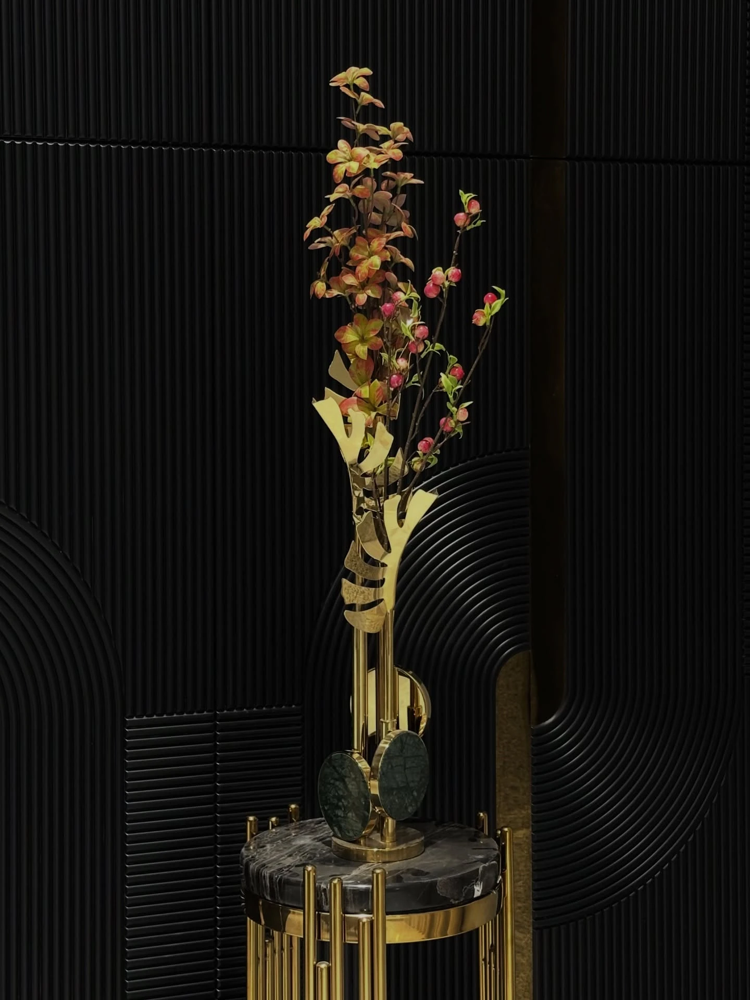
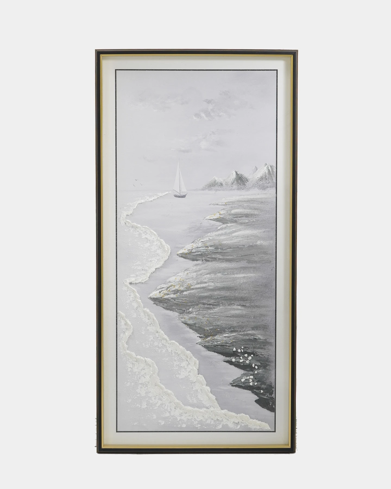
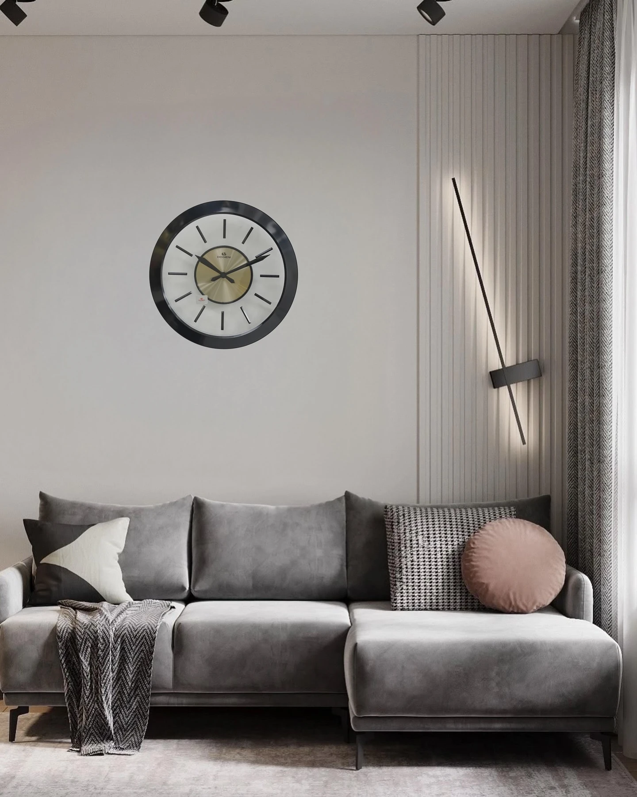
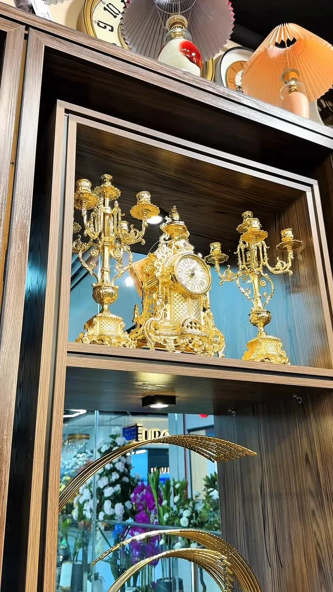
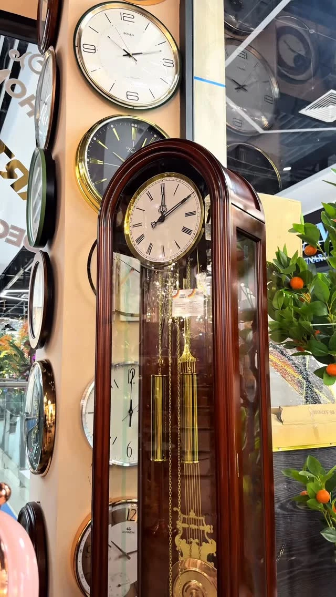
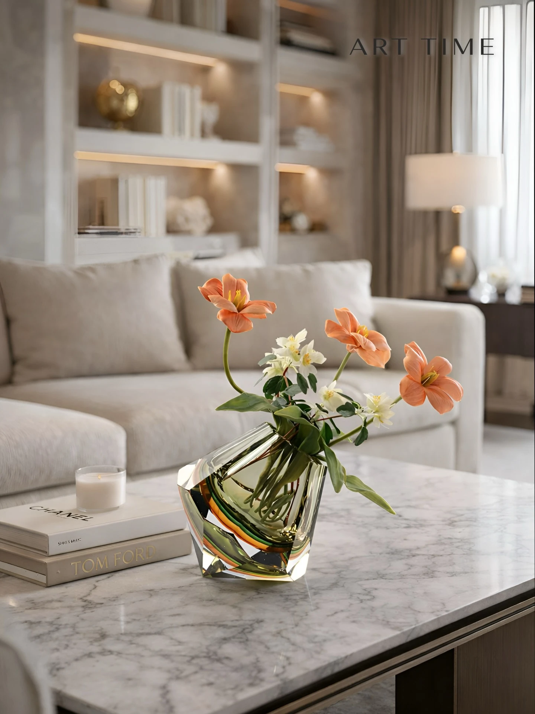
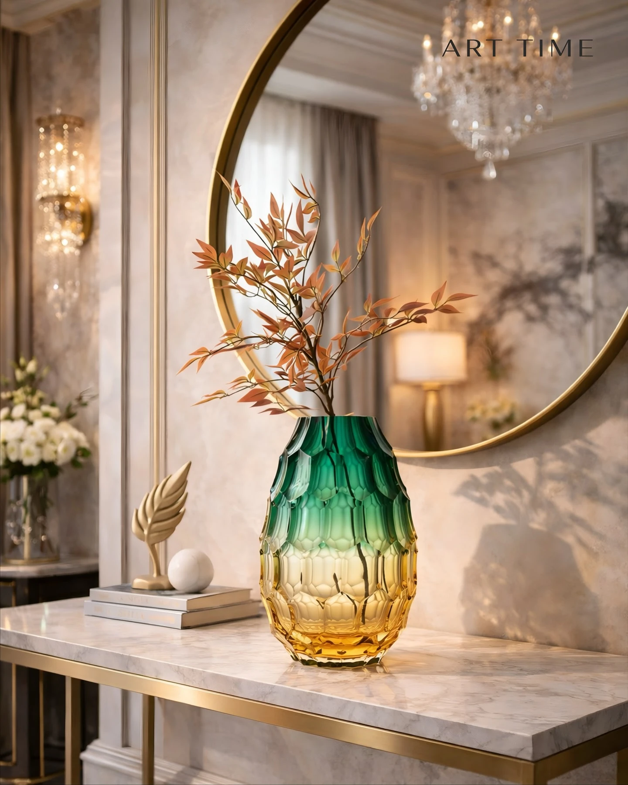

01 · В комнате
Картина
Искусство, которое задаёт настроение пространству.
От пространства к предмету
Предметы, которые создают атмосферу и делают интерьер по-настоящему вашим. Мы подбираем их в единой эстетике — от искусства до деталей.
Перейти к предметам
01 · В комнате
Искусство, которое задаёт настроение пространству.
02 · В комнате
Выразительные детали для особой атмосферы.

В коллекции
Акцентные предметы, которые завершают образ интерьера.
Крупная картина с зелёными листьями связывает светлые поверхности и природные оттенки. Подбираем искусство под масштаб стены.
Ваза с цветами на круглом столе продолжает вертикальный ритм картины. В проекте Art Time подобраны хрустальная ваза и цветы.
Фруктовый сосуд и салфетница объединяют повседневные предметы в композицию. Подбор учитывает столешницу и уже существующую мебель.
В реальных интерьерах
Картины, декор и композиции, подобранные Art Time для уже существующих интерьеров.

Подбор предметов для входной зоны, холла, лестницы, зала, кухни и других комнат.

Картина, парный настенный декор и цветы объединили интерьерную композицию.
Подбор большой картины, хрустальной вазы и цветов, фруктового сосуда и салфетницы.

Подобраны декор для ниш, цветочная композиция и акценты для пространства.

Бренд показал наполнение минус первого этажа и завершённый интерьер.
Ещё один взгляд

Опубликованная интерьерная сцена о подборе наполнения под характер пространства. Авторство ремонта не заявлено.

Золотистая стойка, высокий растительный силуэт и тёмная стена в примере бренда.
Картины / часы / вазы / арт-объекты
Начните с одного акцента. Или соберите несколько предметов в одной эстетике.
16 предметов
 01
01Картины
Бирюзовые формы в светлой раме. Ручная работа; алюминиевый каркас.
Размер и исполнение уточним при обращении.
Цена по запросу · Уточнить наличие
Уточнить по телефону ↗
02Картины
Светлый береговой пейзаж в раме. Ручная работа.
160 × 80 см. Ручная работа, рама из пластика.
Цена по запросу · Уточнить наличие
Уточнить по телефону ↗ 03
03Часы
Оранжевый циферблат и выразительная металлическая форма.
Диаметр 90 см. Бесшумный механизм.
Цена по запросу · Уточнить наличие
Уточнить по телефону ↗
04Часы
Контрастный круглый циферблат для современного интерьера.
Диаметр 50 см. Металлический корпус.
Цена по запросу · Уточнить наличие
Уточнить по телефону ↗ 05
05Часы
Деревянная рама, светлый циферблат и крупные арабские цифры.
Размеры и исполнение уточним при обращении.
Цена по запросу · Уточнить наличие
Уточнить по телефону ↗
06Часы
Декоративный набор из часов и парных подсвечников на полке коллекции Art Time.
Размеры и состав набора уточним при обращении.
Цена по запросу · Уточнить наличие
Уточнить по телефону ↗
07Часы
Классические напольные часы в деревянном корпусе из витрины Art Time.
Размеры и механизм уточним при обращении.
Цена по запросу · Уточнить наличие
Уточнить по телефону ↗
08Вазы
Сочетание стеклянного сосуда и оранжевых цветов в светлом интерьере.
Муранское стекло, ручная работа. Размеры и состав композиции уточним.
Цена по запросу · Уточнить наличие
Уточнить по телефону ↗
09Вазы
Зелёно-янтарный градиент и вытянутый силуэт, показанные в интерьерной сцене бренда.
Муранское стекло, ручная работа.
Цена по запросу · Уточнить наличие
Уточнить по телефону ↗ 10
10Вазы
Парные декоративные сосуды с фигурными верхними элементами.
Размеры, материал и состав пары уточним при обращении.
Цена по запросу · Уточнить наличие
Уточнить по телефону ↗11Вазы
Два вытянутых стеклянных силуэта в зелёно-янтарной гамме.
Муранское стекло, ручная работа. Предметы и комплектацию подберём отдельно.
Цена по запросу · Уточнить наличие
Уточнить по телефону ↗ 12
12Вазы
Бирюзовый сосуд с декоративной металлической крышкой.
46 × 17 см. Хрусталь, металлическая крышка.
Цена по запросу · Уточнить наличие
Уточнить по телефону ↗13Вазы
Меньший вариант бирюзового сосуда из той же пары на фото.
37 × 15 см. Хрусталь, металлическая крышка.
Цена по запросу · Уточнить наличие
Уточнить по телефону ↗ 14
14Арт-объекты
Полированная металлическая форма на тёмном основании.
Размеры и материал уточним при обращении.
Цена по запросу · Уточнить наличие
Уточнить по телефону ↗ 15
15Арт-объекты
Серебристая спиральная форма рядом с фактурным вертикальным элементом.
Размеры и состав композиции уточним при обращении.
Цена по запросу · Уточнить наличие
Уточнить по телефону ↗ 16
16Композиции
Широкая ваза со светлыми и оранжевыми цветами, показанная в ассортименте Art Time.
Размеры и состав композиции уточним при обращении.
Цена по запросу · Уточнить наличие
Уточнить по телефону ↗Попробуйте другое название или вернитесь ко всей коллекции.
Актуальную стоимость, размеры и наличие уточним перед заказом.
В диалоге с вашим домом
Учитываем пространство, цвета, мебель и пропорции. Подбираем картины, часы, вазы и аксессуары так, чтобы они стали частью общей композиции.
Обсудить задачуСпециалист может приехать и подобрать детали на месте. Расскажите о комнате и задаче — согласуем формат встречи и условия.
Обсудить задачуДоставим выбранные предметы и поможем разместить их в интерьере. Маршрут, сроки и условия обсуждаем при обращении.
Обсудить задачуНесколько ответов о подборе и визите.
Сфотографируйте комнату и место для будущего акцента. Запишите размеры стены, полки или стола, отметьте основные цвета и расскажите, какие предметы ищете. Фотографии можно передать в Instagram Art Time вместе с запросом.
Да. Подбор учитывает пространство, стиль, цвета и пропорции. Можно начать с одного акцента или обсудить наполнение комнаты.
Выберите предмет и подготовьте запрос или позвоните. Актуальную стоимость, размеры и наличие уточним перед заказом.
Art Time находится в Ташкенте, на улице Тимура Малика, 3А. Перед визитом позвоните, чтобы согласовать встречу.
Подбор, доставка и размещение входят в направления работы Art Time. Условия для вашего пространства согласуем отдельно.
Art Time / Ташкент
Приезжайте увидеть предметы, почувствовать масштаб и обсудить вашу комнату.
Ташкент,Перед визитом позвоните, чтобы согласовать встречу.
+998 98 000 00 48Instagram @arttime_uzПодготовьте запрос, отредактируйте его и передайте Art Time удобным способом.
Запрос готовится на вашем устройстве. Передайте текст Art Time в Instagram или обсудите его по телефону.